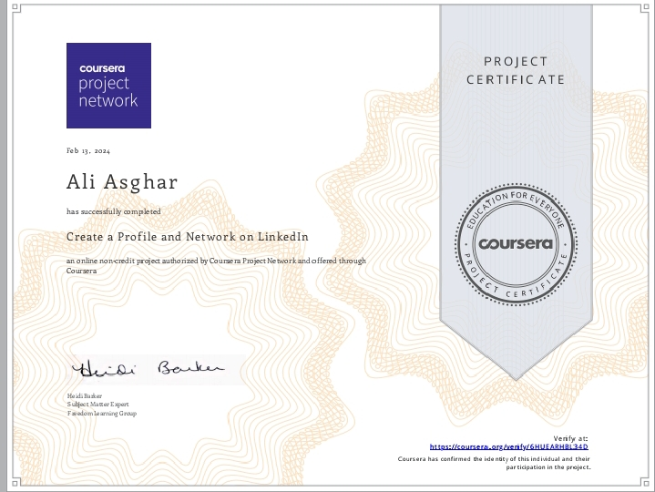

LinkedIn Profile & Networking Certificate
Awarded to Ali Asghar for successfully completing the project "Create a Profile and Network on LinkedIn". Offered by Coursera Project Network and authorized by the Freedom Learning Group, this non-credit project was completed on February 13, 2024. It focuses on building a professional presence and expanding connections on LinkedIn. Signed by Heidi Becker, Subject Matter Expert.